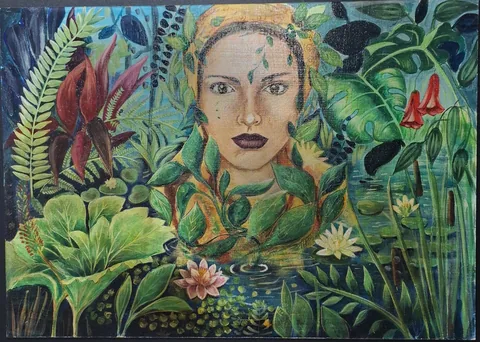
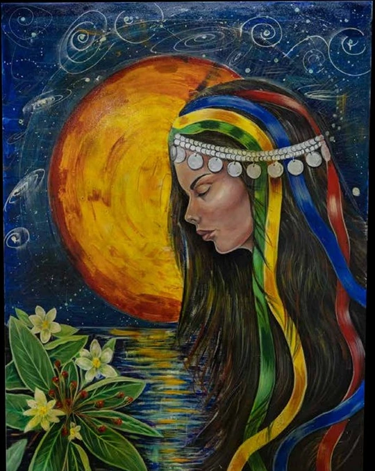
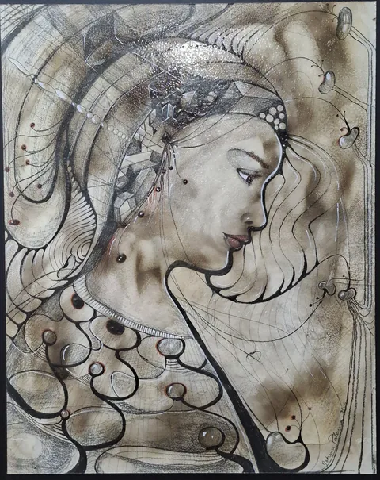
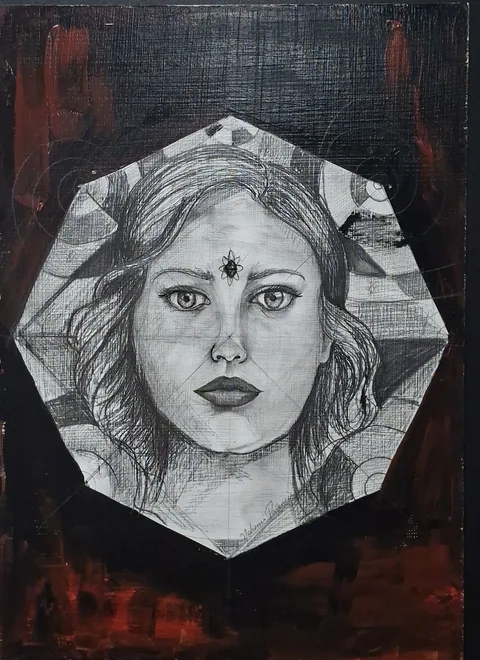
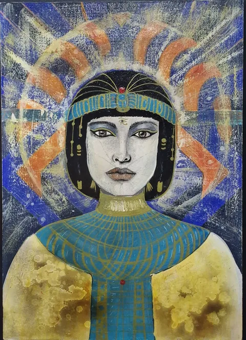
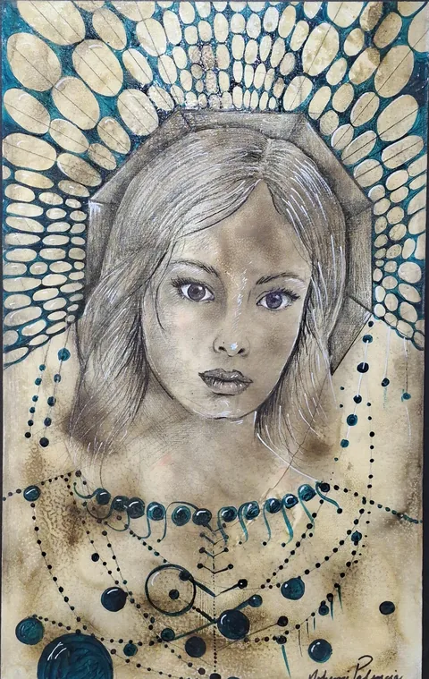
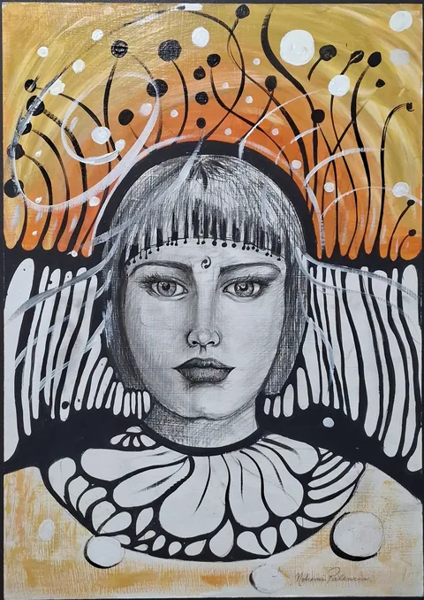
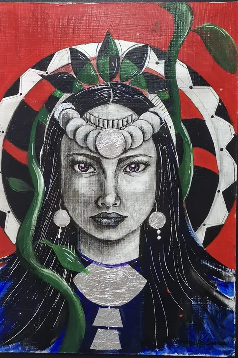
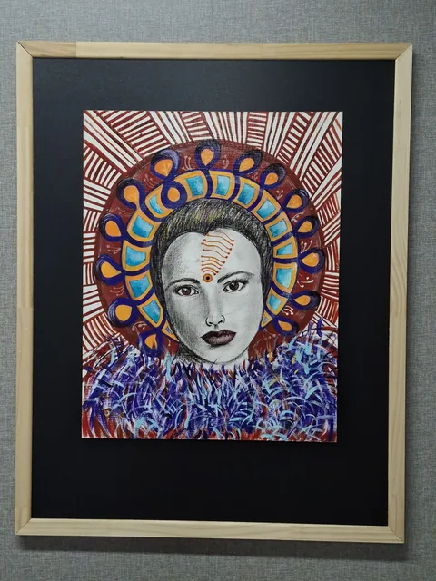
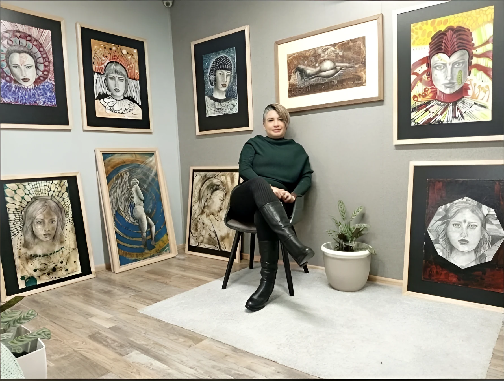

2026
Rostros oníricos.
Cartografía de lo invisible.
En dibujo y pintura, el rostro femenino dialoga con la geometría, los símbolos ancestrales y la naturaleza.

OBRA DESTACADAEl aroma a canelo 2026 · Técnica mixta
Próxima participación · Exposición colectiva
La artista participará en «La Escena del Arte» — edición Noviembre 2026, una exposición colectiva en el Centro Cultural CA660 de Fundación CorpArtes, en Las Condes.
Conocer AMF GalleryFechas y sede comunicadas por la artista; cuatro obras seleccionadas documentadas con fotografías.
01 / La obra
Cartografía de lo invisible
Una investigación plástica donde los rostros femeninos se entrelazan con geometría sagrada, símbolos ancestrales y el imaginario onírico.








02 / Exposición documentada · 2026
ARCHIVO EXPOSITIVO / VALDIVIA
Galería Urbana Santo Tomás
Cartografía de lo invisible
La exposición se presentó en Valdivia en 2026. La figura femenina, la geometría y los elementos de la naturaleza forman parte de la investigación artística que Nohemi describe en su propia declaración.
Ficha de exposición
Fecha y sede documentadas por Comunidad Creativa de Los Ríos. El subtítulo procede del portafolio facilitado por la artista.
ROSTROS ONÍRICOS · CARTOGRAFÍA DE LO INVISIBLE
En su declaración artística, Nohemi relaciona la espiral y el círculo con la anatomía del rostro, la naturaleza y el cosmos.
— Nohemi Palencia Cisneros · Declaración artística

04 / La artista
Nohemi Palencia Cisneros desarrolla su obra en torno a la figura humana, sus símbolos y su dimensión emocional.
Egresó en 2001 de la Escuela de Artes Plásticas Arturo Michelena, en Valencia, Venezuela. En su trayectoria venezolana participó en muestras y salones vinculados a la Universidad de Carabobo, la Galería Braulio Salazar y el Museo de la Cultura de Valencia. Desde 2016 reside en Valdivia, donde ha continuado desarrollando y exhibiendo su obra.
En sus trabajos de dibujo y pintura, la geometría de lo celular a lo cósmico convive con referencias territoriales, naturales y culturales. La técnica mixta da forma a este imaginario onírico.
Conoce su trayectoria05 / Trayectoria artística
De Venezuela a Chile: una selección de exposiciones, reconocimientos y formación documentados por la artista.
Galería Urbana Santo Tomás · Valdivia, Chile
Valdivia, Región de Los Ríos, Chile
Valdivia, Región de Los Ríos, Chile
Museo Nueva Cádiz · La Asunción, Venezuela
Estado Carabobo, Venezuela
Muestra de artes visuales · Estado Carabobo, Venezuela
Galería Braulio Salazar · Valencia, Venezuela
Museo de la Cultura de Valencia · Venezuela
Universidad de Carabobo · Valencia, Venezuela
Galería Luis Guevara Moreno · Valencia, Venezuela
Egreso · Valencia, Venezuela
Salón de Pintores Noveles · Rotary Club Valencia, Venezuela
Participación bajo la dirección del pintor Gregorio Adán Palencia Castellanos · Bejuma, Venezuela
Selección basada en el currículum artístico proporcionado por Nohemi Palencia Cisneros.
06 / Contacto
Para conocer más sobre sus obras, exposiciones o consultas profesionales, conecta con la artista.
VALDIVIA, CHILE · 2026